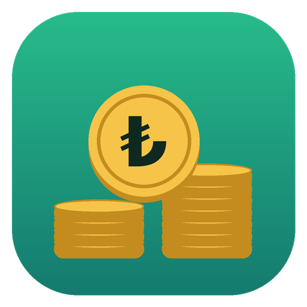

Kuruşu Kuruşuna
iPhone test sürümü 1.8.1 (202610192137)Bu sayfayı iPhone'da Safari ile aç. Düğmeye basınca "Yükle" diye sorulur. Uygulama ana ekrana iner.
Bu sürüm sadece önceden kaydedilmiş iPhone'lara yüklenebilir. Kayıtlı olmayan bir telefonda "yüklenemedi" hatası verir.
Uygulama açılmıyorsa Ayarlar > Gizlilik ve Güvenlik > Geliştirici Modu kısmını kontrol et. Normalde bu sürüm için gerekmez.